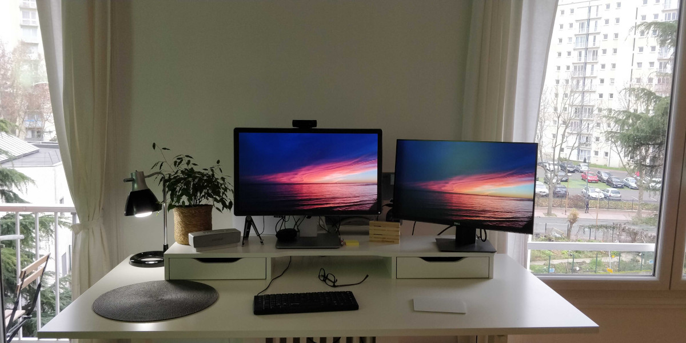

Équipement
- Publié le :
- 2019-09-04

- Bureau chez moi :
- Le bureau assis/debout que j’ai chez moi : Ikea SKARSTA à 199 €
Je n’ai pas choisi la version électrique RODULF à 349 € parce que le changement de hauteur du bureau est assez rapide avec la manivelle (Low-tech powered 🙂) - Alex élément complémentaire bureau
- Écran Dell 24 Ultra HD 4K : P2415Q
- Second moniteur : 23.8" Dell P2421DC
- WebCam Logitech C922
- Microphone Rode NT-USB (je ne l’utilise jamais)
- Logitech MX Master 3
- Jabra Evolve2 65 (avril 2021, 166 €)
- Ergotron LX Desk Monitor Arm (avril 2021, 151 €)
- Fauteuil/siège : HÅG Capisco
- Le bureau assis/debout que j’ai chez moi : Ikea SKARSTA à 199 €
- Laptop :
- MacBookPro15,1
- Étiquettes Bépo pour clavier
- Protection clavier: Mosiso Premium Ultra Thin Housse
- LetsSwipeThat Pack of 3 | 15’’ Screen pour protéger son clavier des traces de doigts
- Ultra Slim Coque Rigide Compatible Macbook Pro 15 Pouces Touch Bar et Touch ID
- Support Laptop pour éviter d’être courbé toute la journée
- Au bureau :
- XD Design Urban Lite Sac à Dos Antivol Gris
- Apple Magic Trackpad 2
- Clavier Typematrix Bépo
- AirPods
Depuis le 6 novembre 2021, j’essaie de migrer du clavier Clavier Typematrix Bépo vers un clavier Moonlander Mark I mais pour le moment c’est un échec, cela va me demander beaucoup d’entrainement.
Voici ma configuration clavier actuelle : https://configure.zsa.io/moonlander/layouts/Y5wmw/latest/0